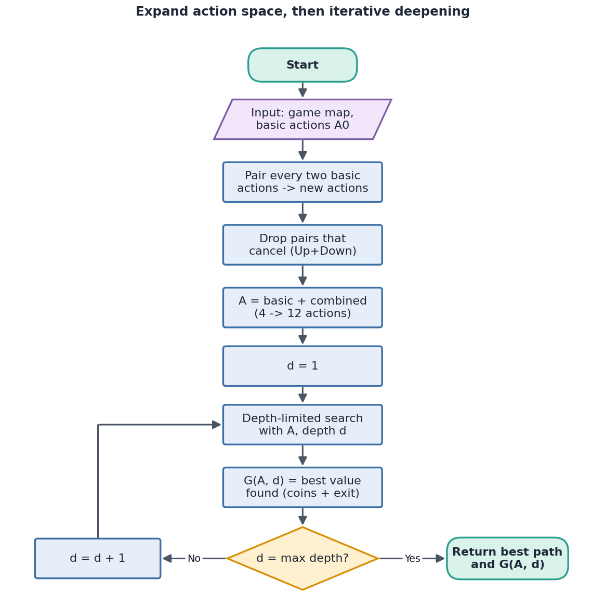
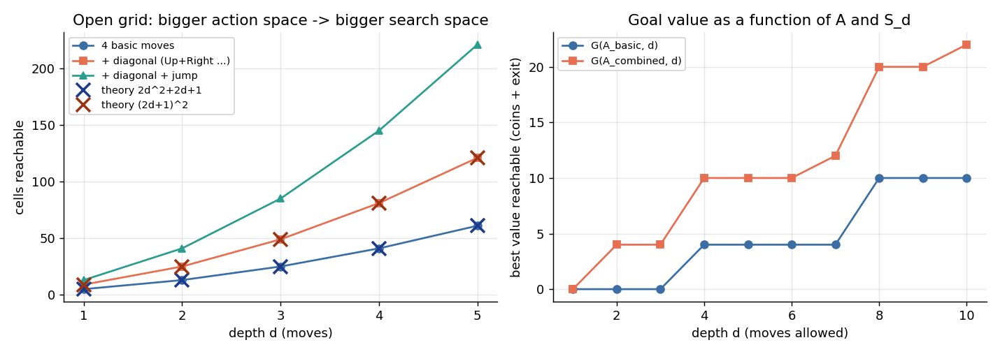
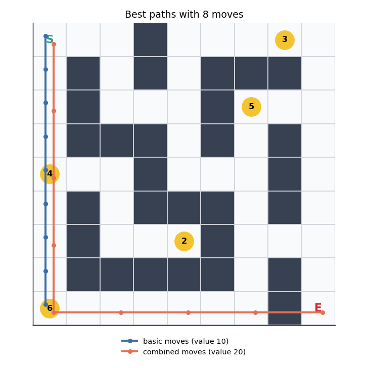
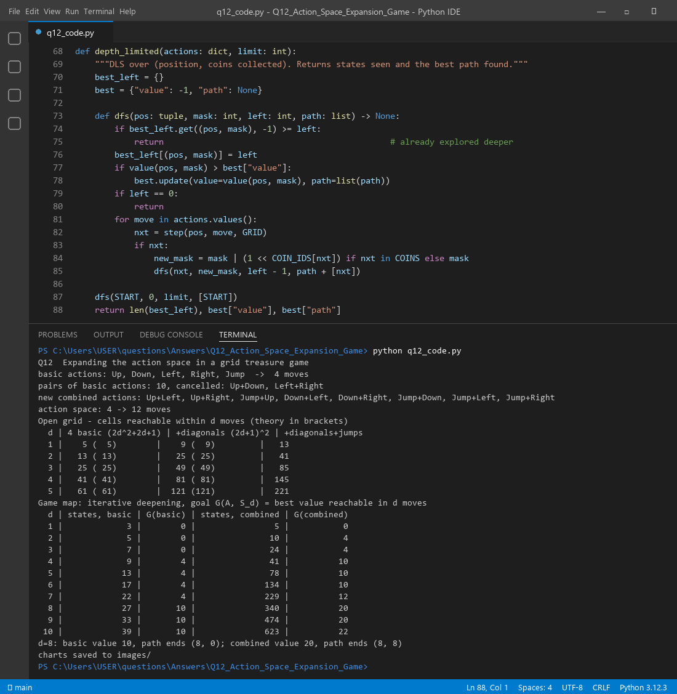

In Q11 we only used simple moves: one feature, one step. That is the action space. The search space is all the states those moves can reach. A creative agent does not only search harder. It also invents new moves. The easiest way is to glue two basic actions into one: walk up and right in one go (a diagonal), or jump and move right (a leap over a wall). More moves means more places the agent can reach, so expanding the action space expands the search space too.
Yes, and we can do it at the same time as we expand the search space. In Q11 each iteration widened the search space with a bigger Manhattan radius. Here each new combined action also widens it, because every state gets more neighbours (we redefine the neighbour). The two effects stack.
| Kind | Actions | Count |
|---|---|---|
| Basic movement | Up, Down, Left, Right | 4 |
| Pairs of basic actions | 5 basic actions give C(5,2) = 10 pairs | 10 |
| Cancelled pairs (no effect) | Up+Down, Left+Right | 2 |
| Diagonal combinations | Up+Left, Up+Right, Down+Left, Down+Right | 4 |
| Leap combinations | Jump+Up, Jump+Down, Jump+Left, Jump+Right | 4 |
| Action space | 4 basic → 12 actions in total | 12 |
Real output: "pairs of basic actions: 10, cancelled: Up+Down, Left+Right" and "action space: 4 -> 12 moves".

function ExpandActions(basic):
A ← basic moves
for each pair (a, b) in basic:
if a and b cancel: continue # Up + Down = nothing
if Jump in (a, b): add "leap 2 cells" in the other direction
else: add "diagonal" = a + b # Up + Right
return A
function SearchWithActions(A, S0, max_d):
for d = 1 .. max_d: # iterative deepening
(states, value, path) ← DLS(S0, A, depth = d)
G(A, d) ← value # goal = f(action space, search space)
return best path
function DLS(state, A, left):
if value(state) > best: best ← value(state)
if left = 0: return
for each action in A:
next ← apply(action, state)
if next is free: DLS(next, A, left - 1)
First on an open grid with no walls, so we can check the maths. With 4 moves, the cells reachable in d moves are 2d² + 2d + 1. With the 4 diagonals added, they are (2d + 1)². The code counts them for real:
| d | 4 basic (theory 2d²+2d+1) | + diagonals (theory (2d+1)²) | + diagonals + jumps |
|---|---|---|---|
| 1 | 5 (5) | 9 (9) | 13 |
| 2 | 13 (13) | 25 (25) | 41 |
| 3 | 25 (25) | 49 (49) | 85 |
| 4 | 41 (41) | 81 (81) | 145 |
| 5 | 61 (61) | 121 (121) | 221 |
The counts match the formulas exactly. At d = 2, 13 cells become 25, and with leaps 41. The ratio keeps growing with d.
Define the goal value as G(A, Sd) = the best score (coins + exit bonus) the agent can reach using actions A within the search space Sd (all states within d moves). G depends on both. Change A and G changes, even for the same d.
| d | states, basic | G(basic) | states, combined | G(combined) |
|---|---|---|---|---|
| 2 | 5 | 0 | 10 | 4 |
| 4 | 9 | 4 | 41 | 10 |
| 6 | 17 | 4 | 134 | 10 |
| 8 | 27 | 10 | 340 | 20 |
| 10 | 39 | 10 | 623 | 22 |
With 8 moves the basic agent scores 10 and the combined agent scores 20. In effect the goal moved: it is only reachable with the bigger action space. The basic agent gets stuck at 10 for d = 8 to 10, and ends at (8, 0) without ever reaching the exit. The combined agent reaches the exit at (8, 8) along the bottom corridor.


Q11 expanded the search space by raising the depth d. Q12 expands it a second way, by adding actions. Doing both gives the largest effect: at d = 10 the combined agent looks at 623 states instead of 39 and scores 22 instead of 10. The price is more work. The search space grows fast, so in practice we add only the combined actions that look useful, and judge each new action by its payoff (here, the goal value G).

Files in this folder: q12_code.py (source), q12_code.ipynb (Colab/Jupyter version, already run),
q12_output.txt (console output), images/ (all figures).